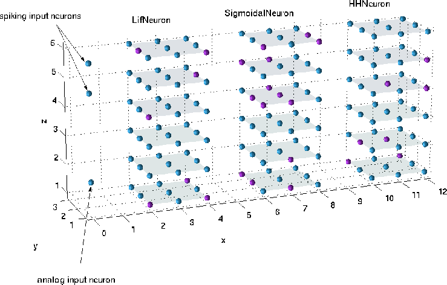

| Circuit-Tool User Manual |


 |
| Circuit-Tool User Manual |
|
As the next step we will create the individual pools. First we will create a pool of integrate-and-fire neurons:
»[nmc,p_lif]=add(nmc,'pool','type','LifNeuron','size',[3 3 6],'origin',[2 1 1]);
The above command creates 54 neurons of the class LifNeuron (which is a neuron type available in CSIM ) and adds them to nmc. Note that due to the object oriented paradigm used in Matlab the nmc object must appear also on the left hand side of the command. The variable p_lif is a handle/index to refer to that particular pool later in the programm.
The neurons are located on a three dimensional 3 x 3 x 6 integer grid with origin (2,1,1). You can visualize this by issuing the command
» plot(nmc);The plot command should produce a figure which looks very much like Figure
![[*]](crossref.gif) .
As you can see in Figure some neurons are marked by magenta
balls. These are inhibitory neurons while the other are excitatory
neurons. By default a neuron is choosen to be a excitatory with a
probability of 80% (this can be controlled with the frac_EXC
parameter).
.
As you can see in Figure some neurons are marked by magenta
balls. These are inhibitory neurons while the other are excitatory
neurons. By default a neuron is choosen to be a excitatory with a
probability of 80% (this can be controlled with the frac_EXC
parameter).
Now we add the other two pools of neurons where we set some off-default parameters:
>> [nmc,p_sig]=add(nmc,'pool','type','SigmoidalNeuron',...
'size',[3 3 6],'origin',[6 1 1],...
'Neuron.thresh',1,'Neuron.beta',2,'Neuron.tau_m',3,...
'Neuron.A_max',4,'Neuron.I_inject',1,'Neuron.Vm_init',0);
>> [nmc,p_hh ]=add(nmc,'pool','type','HHNeuron',...
'size',[3 3 6],'origin',[10 1 1],...
'Neuron.Inoise',???,'Neuron.Iinject',[??? ???]);
The code fragment above shows how to set off-default values for some
parameters of the Neurons generated. One has to add a pair of
'Neuron.<field>',<value> arguments to the function call. Which
fields are valid is determined by the class of the neuron (see the
CSIM Class Reference
for details).
As the next step we create the input neurons. A pool of 2 excitatory spiking input neurons
>> [nmc,p_sin] = add(nmc,'pool','type','SpikingInputNeuron',...
'size',[1 1 2],'origin',[0 1 5],'frac_EXC',1.0);
and a pool of a single excitatory analog input neuron:
>> [nmc,p_ain] = add(nmc,'pool','type','AnalogInputNeuron',...
'size',[1 1 1],'origin',[0 1 2],'frac_EXC',1.0);
A visualization of the current model is shown in Figure which
was produce by the command plot(nmc);.
|

|